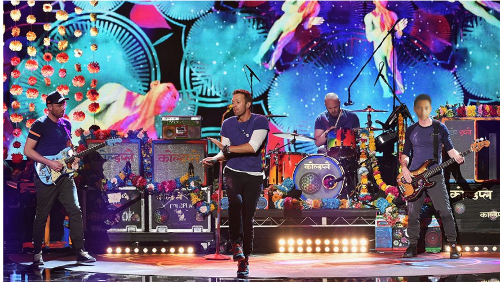
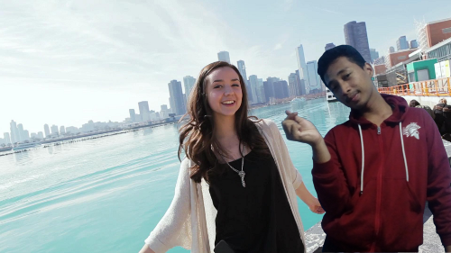
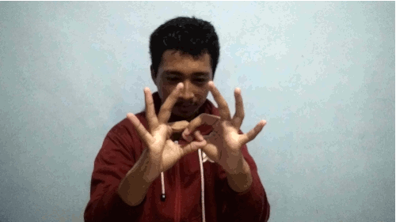

MY BLOG
Welcome to the blog of Ayoga Wibowo

Tentang Saya
its all about me, Ayoga Wibowo
Haloo guys, perkenalkan saya Ayoga Wibowo, anak ke-1 dari 3 bersaudara. Saya bersekolah di SMK-SMAK Bogor, kelas XI-PSG. Saya orangnya biasa aja, tapi ngangenin ^_^. Saya lahir di Jakarta pada tanggal 21 Januari 2002, jadi sekarang saya sudah 17 tahun yeey, udah legal yeey :b. Tempat tinggal saya sekarang yaitu di Pamulang, BSD, Tangerang Selatan, Banten. Jadi demi bersekolah, saya rela merantau ke Bogor untuk belajar menjadi analis. Jika kalian mau tahu lebih tentang aku, bisa simak data dibawah ini:
- Nama : Ayoga Wibowo
- Umur : 17 Years Old
- TTL : Jakarta, 21 Januari 2002
- Alamat : Pamulang, Tangerang Selatan
- Sekolah : SMK-SMAK Bogor
- Kelas : XI-PSG
- IG : ayoga.21
- Nomor telepon : 081382081628
- NIS : 17.63.08603
- Email : ayogawibo63@smakbo.sch.id
- ID Line : ayogajerins21

Hasil Karya dan Hobiku
Semua Karyaku, ada disini
Kalau berbicara tentang hobi, hobi saya suka berubah-ubah, sesuai situasi dan kondisi. Kadang-kadang saya suka bermain gitar, kadang-kadang suka nonton anime, dan kadang-kadang suka main game. Kalau bermain gitar saya lakukan saat waktu luang, dan saya juga hobi nonton konser, terutama konser grup musik kesukaan saya, Coldplay. Jika kalian tidak tahu Coldplay, maka silakan pencet button ini, Sini.
Saya berhasil membuat sebuah karya, yaitu sebuah gif dan sebuah foto yang diedit. Karya ini dibuat sebenarnya untuk tugas komputer di SMAKBO. Tetapi saya post untuk membuat lebih menarik blog saya. Foto yang pertama yaitu adalah idola saya, sebenernya saya punya banyak idola, jadi untuk mempermudah, saya memakai foto idola saya yang ini. So, jangan lupa komen dibawah yaa :)
 Ayoga Wibowo
Just me, myself and I, exploring the whole of chemistry reaction. I have a heart of love and a interest of the chemistry reaction. I want to share my experience with you. So please, dont forget to check this blog every day :)
All Photo
-
Its me ^_^
Ayoga Wibowo -
 This is my favorite anime
This is my favorite anime
Fate Series -
 My Family
My Family
Ayogawibowo's Family
Tags
Friend Anorganic Chemistry Place Analyst Organic Chemistry Time Ideas Chemistry Analysis Family News Chemical Industries Anime Sports Games